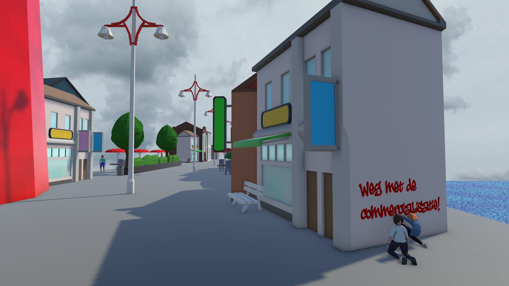

Neo Scheveningen - Immersive Storytelling
In jaar 2 periode 4 van mijn studie bij CMD, heb ik de keuzemodule 'Immersive Storytelling' gevolgd. Voor deze module heb ik een serious game ontworpen en gebouwd in Unity voor het Planbureau van de Leefomgeving.
De opdracht die ik kreeg voor deze game was: voor het Planbureau voor de Leefomgeving (PBL) een speelbare game ontwerpen die de speler het dagelijkse leven in Nederland in 2125 laat ervaren.
De game brengt een van de zeven door het PBL ontworpen toekomstscenario's tot leven door middel van Future Mundane Storytelling.
Focus hierbij op alledaagse sociale interacties en de onderliggende conflicten en uitdagingen die specifiek zijn voor deze toekomst.
Het thema dat aan ons werd toegewezen was beschermen tegen de zeespiegel. Samen hebben we bedacht om het door middel van een gigantische muur te doen. Buiten deze muur, moest er ook een conflict of uitdaging ontworpen worden.
Mijn doel als Story Designer was om te bedenken wat voor wereld de game zich in bevond. Na overleg is er gekozen voor (Neo/Nieuw) Scheveningen.
Ik heb onderzoek gedaan naar wat er momenteel in Scheveningen gebeurd en hoe dat in de toekomst zou kunnen veranderen. Hedendaags zie je in Scheveningen ook veel commercie i.p.v. de natuur. Dit was een centraal punt in het bedenken van de wereld.
Daarom heb ik ervoor gekozen om commercie ook 100 jaar in de toekomst een onderwerp te laten zijn. Er is een tweestrijd in deze wereld tussen de monteurs die aan de muur werken en de mensen die denken dat de overheid de originele visie van de muur verliest, het beschermen tegen het water.
In de gameplay komt deze tweestijd ook naar voren. Je lost eerst klussen op in de muur, daarna op de muur. Als monteur wordt er gezegd dat de mensen op de muur niet zo vriendelijk zijn naar monteurs.
Je mag niet gezien worden. De game gaat verder dat je een stealthmissie moet voltooien om bij het probleem op de muur te komen, een waterleiding.
Je bent eindelijk klaar, maar wat zie je daar? Twee meiden die graffiti op de muur zitten te spuiten. Ze zijn het niet eens met de overheid en willen gehoord worden.
Jouw laatste taak is om hun gerust te stellen. Daar eindigt de game.
Tijdens het bedenken van het verhaal, heb ik moeten denken aan de level design en flow. Eerst begon ik met de wereld te schetsen, daarna te bedenken wie er in die wereld leven. Op basis van de typen personen in mijn wereld, heb ik de main character en de belangrijkste NPC's ontworpen. Het was voor mij heel belangrijk dat spelers alle aspecten van de wereld konden ervaren. De kant van de monteurs, de toeristen en de protesterende jongeren. Door tijdsnood heb ik niet al mijn ideeën kunnen realiseren, maar ik ben alsnog trots op wat ik heb neergezet. Ik denk dat de docenten ook onder de indruk waren, omdat ik een 9 heb gekregen voor dit project. Ik gebruikte mijn eerdere ervaring met verhalen maken, zie "Storyline Crafting", en leerde hoe ik ook de level design en interactie design kon inzetten, zodat mijn verhaal duidelijker werd. Hiermee heb ik geëxperimenteerd met de stealthmissie, posters ophangen in de wereld en meer 'show don't tell' elementen toe te voegen. Op het laatst heb ik de dialoog een beetje aangepast om de spelers meer te informeren over hoe de game werkt, omdat dat nog niet duidelijk was. Al met al ben ik heel blij met het eindresultaat. Zonder mijn groepsgenoten had ik dit niet op zo'n niveau kunnen maken en kon ik mezelf meer verdiepen in het verhaal, in plaats van dat het een afterthought zou zijn.
Wil je het zelf spelen? Klik dan op deze link. (Als je via itch speelt, werkt de credits scene niet. Verder alles wel.) Escape Room - Immersive Storytelling